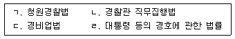
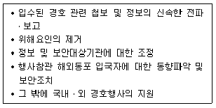
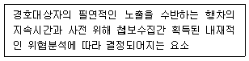
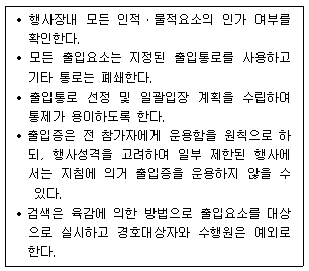

경비지도사-2차(경호학) (2016-11-19 기출문제)
1. 경호의 개념에 관한 설명으로 옳지 않은 것은?
- 형식적 의미의 경호는 실정법상 경호기관이 수행하는 일체의 경호작용이다.
- 실질적 의미의 경호는 경호대상자를 여러 가지 위해로부터 보호하는 모든 활동이다.
- 대통령 등의 경호에 관한 법률에서의 경호는 호위와 경비 중 호위만을 포함하고 있다.
- 본질적ㆍ이론적 입장에서 접근하여 학문적 측면에서 고찰된 개념은 실질적 의미의 경호이다.
(정답률: 99%)

2. 경호정보와 첩보에 관한 설명으로 옳지 않은 것은?
- 경호첩보는 가공되지 않은 정보의 자료가 되는 2차적인 지식을 의미한다.
- 경호정보의 분류에는 인적정보, 물적정보, 지리정보, 교통정보, 기상정보 등이 있다.
- 경호정보는 사용자가 필요로 하는 시기에 제공되어야 하는 적시성이 있어야 한다.
- 경호정보는 시간이 허용되는 범위에서 사용자가 의도한 대상과 관련한 모든 사항을 망라하여 작성해야 하는 완전성이 있어야 한다.
(정답률: 91%)
3. 경호의 성격에 의한 분류 중 경호관계자의 사전 통보에 의해 계획ㆍ준비되는 경호활동은?
- 공식경호
- 직접경호
- 약식경호
- 비공식경호
(정답률: 96%)
4. 경호경비 관련법의 제정년도를 순서대로 옳게 나열한 것은?

- ㄱ - ㄴ - ㄹ - ㄷ
- ㄱ - ㄷ - ㄴ - ㄹ
- ㄴ - ㄱ - ㄹ - ㄷ
- ㄴ - ㄹ - ㄷ - ㄱ
(정답률: 88%)
5. 경호의 원칙에 관한 설명으로 옳은 것은?
- 3중 경호의 원칙: 경호대상자가 위치한 지역으로부터 경호행동반경을 거리개념으로 전개한 원칙
- 은밀경호의 원칙: 경호대상자는 어떠한 상황 하에서도 절대적으로 보호되어야 한다는 원칙
- 두뇌경호의 원칙: 위해기도자로부터 경호대상자를 떼어 놓는다는 원칙
- 하나의 통제된 지점을 통한 접근의 원칙: 자신의 책임구역에 대해서는 자신이 책임을 져야 한다는 원칙
(정답률: 97%)
6. 대통령경호공무원에 관한 설명으로 옳지 않은 것은?
- 대통령경호실장은 경호공무원 및 별정직 국가공무원에 대하여 모든 임용권을 가진다.
- 대통령경호실장의 제청으로 서울중앙지방검찰청 검사장이 지명한 경호공무원은 사법경찰권을 가질 수 있는 경우가 있다.
- 대통령경호실장은 경호업무의 수행에 필요하다고 판단되는 경우, 경호목적 달성을 위한 최소한의 범위로 한정하여 경호구역을 지정할 수 있다.
- 대통령경호실장은 정무직공무원으로 대통령이 임명한다.
(정답률: 92%)
7. 조선 후기의 경호기관에 관한 설명으로 옳지 않은 것은?
- 호위청: 인조반정 후에 설립한 기관으로 왕의 호위를 담당하였다.
- 금군: 국왕의 친위군으로 별시위, 겸사복, 충의위 등 내삼청으로 분리되었다.
- 숙위소: 정조 시대 존재하였던 궁궐 숙위 기관이다.
- 장용위: 왕의 호위를 강화하기 위해 정조 때 설치한 전담부대이다.
(정답률: 81%)
8. 경호조직의 원칙 중 체계통일성의 원칙에 관한 것은?
- 조직의 각 구성원은 오직 하나의 상급기관에게만 보고하고 명령지휘를 받고 그에게만 책임을 진다는 것이다.
- 임무 수행에는 일반 국민의 협조가 필수적이며 국민의 협력을 얻지 못하면 경호 임무는 실패할 확률이 높다.
- 업무의 성격상 개인적 작용으로 이루어지지 않고 기관단위작용으로 이루어진다는 것을 말한다.
- 구조의 정점으로부터 말단에 이르는 무수한 수준을 통하여 상하계급간의 일정한 관계가 이루어져야 한다.
(정답률: 85%)
9. 대통령경호안전대책위원회규정상 다음의 업무분장에 해당하는 자는?

- 국군기무사령부 2부장
- 국가정보원 테러정보통합센터장
- 외교부 재외동포영사국장
- 법무부 출입국ㆍ외국인정책본부장
(정답률: 95%)
10. 각국 경호 유관기관의 역할에 관한 설명으로 옳지 않은 것은?
- 미국 중앙정보국(CIA): 적성국 동향에 대한 정보수집ㆍ분석 전파
- 영국 비밀정보부(SIS): 국내정보 수집 및 분석
- 독일 연방정보부(BND): 해외정보 수집ㆍ분석ㆍ관리
- 프랑스 해외안전총국(DGSE): 해외정보 수집 및 분석
(정답률: 90%)
11. 대통령 등의 경호에 관한 법령상 경호대상 중 전직 대통령과 그 배우자에 대한 경호기간에 관한 설명으로 옳지 않은 것은? (단, 경호대상자의 의사에 반하지 않는 경우에 한정한다.)
- 퇴임 후 10년 이내에서 제공한다.
- 대통령이 임기 만료 전에 퇴임한 경우와 재직 중 사망한 경우에는 그로부터 5년으로 한다.
- 퇴임 후 사망한 경우에는 퇴임일부터 기산하여 5년을 넘지 아니하는 범위에서 사망 후 3년으로 한다.
- 전직 대통령 또는 그 배우자의 요청에 따라 대통령경호실장이 고령 등의 사유로 필요하다고 인정하는 경우에는 5년 범위에서 경호 기간을 연장할 수 있다.
(정답률: 89%)
12. 다음에서 설명하는 경호작용의 기본 고려요소는?

- 계획수립
- 책임
- 자원
- 보안
(정답률: 81%)
13. 경호임무 수행절차에 관한 설명으로 옳지 않은 것은?
- 계획단계는 경호임무수령 후부터 선발대가 행사장에 도착하기 전까지의 경호활동을 말한다.
- 준비단계는 경호대상자가 행사장에 도착한 후부터 행사시작 전까지의 경호활동을 말한다.
- 행사단계는 경호대상자가 집무실을 출발해서 행사장에 도착하여 행사가 진행된 이후 복귀 시까지의 경호활동을 말한다.
- 평가단계는 경호행사 종료 후 철수하여 결과를 보고하는 경호활동을 말한다.
(정답률: 90%)
14. 경호임무 활동절차에 관한 설명으로 옳지 않은 것은?
- 계획수립은 행사에 관련된 정보를 획득하여 필요한 인원과 장비, 선발대 파견일정 등을 결정하는 활동이다.
- 안전대책작용이란 행사지역 내ㆍ외부에 산재한 취약요소 안전대책 강구, 행사장 시설물 폭발물 탐지 제거 등 통합적 안전작용을 말한다.
- 보안활동은 경호대상자에 대한 위해기도의 기회를 최소화하여 신변안전을 도모하는 활동이다.
- 안전대책의 3대 작용원리는 안전점검, 안전검사, 안전조치를 말한다.
(정답률: 82%)
15. 선발경호에 관한 설명으로 옳지 않은 것은?
- 사전예방 경호활동이다.
- 행사장의 취약요소를 판단하여 필요한 안전조치를 강구한다.
- 행사장을 안전하게 확보하고 유지하는 경호활동이다.
- 예방적 경호조치는 위해자의 입장이 아닌 경호원의 입장에서 면밀히 분석되고 조치되어야 한다.
(정답률: 99%)
16. 선발경호활동에 해당하는 것은?
- 차량 경호대형 선정
- 기동간 경호기만
- 경호지휘소(CㆍP) 운용
- 복제(複製)경호원 운용
(정답률: 90%)
17. 선발경호원의 기본임무에 해당하지 않는 것은?
- 경호원 각자 주어진 책임구역에 따라 사주경계를 실시하고 우발상황 발생시 인적방벽을 형성하여 경호대상자를 보호한다.
- 출입자 통제관리를 위하여 초청장발급, 출입증착용 여부를 확인한다.
- 내부경비(안전구역) 근무자는 경호대상자의 입장이 완료되면 복도, 화장실, 로비, 휴게실 등을 통제한다.
- 외곽경비(경계구역)는 행사장 주변의 취약요소를 봉쇄, 감시할 수 있는 위치를 선정하고 기동순찰조를 운용하여 불순분자 접근을 차단한다.
(정답률: 93%)
18. 근접경호원의 임무에 해당하지 않는 것은?
- 경호대상자에게 위해를 가하지 않을 것이라는 확신이 있기 전까지는 누구도 경호대상자의 주위에 접근시켜서는 안 된다.
- 경호원은 항상 경호대상자의 최근접에서 움직여야 한다.
- 위해자의 공격가능성을 줄이고, 공격 시 피해정도를 최소화하기 위하여 이동 속도를 가능한 한 빠르게 하여야 한다.
- 행사장의 제반 취약요소에 대한 안전조치를 강구하고 가용한 모든 경호원을 운용하여 경호대상자의 신변안전을 도모한다.
(정답률: 95%)
19. 차량경호에 관한 설명으로 옳지 않은 것은?
- 주차장소는 가능한 한 자주 변경하며 야간주차시 위해기도자로부터 은닉하기 위해 어두운 곳에 주차한다.
- 차량이 주행 중일 때보다 정차 시에 경호상 위험도가 증가한다.
- 경호대상자 차량은 선도차량과 일정간격을 유지하며 유사시 선도차량과 같은 방향으로 대피한다.
- 주도로를 사용할 수 없는 우발상황에 대비하여 예비도로를 선정한다.
(정답률: 97%)
20. 경호대상자가 완전히 경호원에 의해 둘러싸여 있는 인상을 주게 되어 대외적인 이미지는 안 좋을 수 있으나 경호효과가 높은 대형은?
- V자 대형
- 일렬 대형
- 쐐기 대형
- 원형 대형
(정답률: 99%)
21. 근접경호 기법에 관한 설명으로 옳지 않은 것은?
- 근접경호원은 공격자가 경호대상자와 경호원 사이에 끼어들지 못하도록 위치를 계속 조정한다.
- 위해기도자가 위해기도를 포기하거나 실패하도록 유도하는, 계획적이고 변칙적인 경호기법을 육감경호라 한다.
- 도보이동간 근접경호에서 이동시에는 위험에 노출되는 정도를 최소화하기 위하여 단거리 직선통로를 이용해야 한다.
- 차량기동 간 근접경호에서는 차량, 행ㆍ환차로, 대형의 구성 및 간격, 속도 등의 사항을 고려하여야 한다.
(정답률: 100%)
22. 근접경호의 특성이 아닌 것은?
- 노출성
- 방벽성
- 예비성
- 기동성
(정답률: 89%)
23. 경호차량 운전요원 준수사항으로 옳은 것은?
- 규칙적인 출발과 도착시간을 준수한다.
- 위기상황시에는 대피를 위하여 창문과 문을 열어둔다.
- 연료주입구는 항상 잠겨 있도록 해야 한다.
- 차의 후면이 출입로를 향하게 하여 경호대상자가 바로 탑승할 수 있도록 한다.
(정답률: 84%)
24. 출입통제 담당자의 책임 업무로 옳은 것은?
- 출입차량 검색 및 지정장소 안내
- 지하대피 시설 점검 및 확보
- 구역별 비표구분
- 병력운용계획 수립
(정답률: 71%)
25. 출입자 통제대책의 방침에 관한 설명으로 옳은 것은 모두 몇 개인가?

- 2개
- 3개
- 4개
- 5개
(정답률: 72%)
26. 행사장 출입통제에 관한 설명으로 옳은 것은?
- 각 구역별 출입통로를 다양화하여 통제의 범위를 정한다.
- 1선(안전구역)은 모든 출입요소의 1차 통제점이 되어야 한다.
- 1선(안전구역)은 행사와 무관한 사람들의 행사장 출입을 통제 또는 제한한다.
- 2선(경비구역)은 출입구에 금속탐지기 등을 설치하여 출입자와 반입물품을 확인한다.
(정답률: 74%)
27. 우발상황 발생 시 경호원의 대응조치로 옳지 않은 것은?
- 경호대상자에 대한 공격을 최초로 인지한 경호원이 육성으로 경고한다.
- 경호원이 체위를 확장하여 경호대상자에 대한 위해자의 공격을 방어한다.
- 공범 또는 제2의 공격을 차단하고 안전을 위하여 경호대상자를 신속히 대피시킨다.
- 인적방벽의 효과를 극대화하기 위하여 군중이 밀집한 지역으로 경호대상자를 대피 시킨다.
(정답률: 99%)
28. 우발상황의 특성으로 옳은 것은?
- 불확실성
- 심리적 안정성
- 예측가능성
- 시간여유성
(정답률: 97%)
29. 총기공격에 대응하는 즉각조치로 옳은 것은?
- 방호는 위협상황인식과 동시에 경호원의 신체로 범인을 제압하는 것을 우선으로 한다.
- 방호 시 경호원은 몸을 은폐하여 위해기도자로부터 표적이 작아지도록 한다.
- 대피 시에는 경호대상자의 품위를 고려하여 조심스럽게 머리를 아래로 향하게 한 상태에서 이동한다.
- 즉각조치는 경고 - 방호 - 대피 순으로 이루어지되 거의 동시에 실시되어야 한다.
(정답률: 99%)
30. 안전검측활동의 요령에 관한 설명으로 옳지 않은 것은?
- 실내 방에서 천장내부 - 천장높이 - 눈높이 - 바닥 검측 순으로 실시한다.
- 검측인원의 책임구역을 명확하게 하며 중복되게 점검이 이루어져야 한다.
- 점검은 1, 2차 점검 후 경호인력이 배치 완료된 행사직전에 최종검측을 실시한다.
- 인간의 싫어하는 습성을 감안하여 사각지점이 없도록 철저한 검측을 실시한다.
(정답률: 95%)
31. 경호복장과 용모에 관한 설명으로 옳지 않은 것은?
- 경호원은 항상 단정한 복장과 용모로 주도면밀함과 자신감을 보여야 한다.
- 행사의 성격과 관계없이 경호원의 품위가 느껴지는 검정색 계통의 정장을 입도록 한다.
- 경호원의 이미지가 경호대상자의 이미지로 연결될 수 있음을 고려하여 언행에 유의하여야 한다.
- 행사의 성격에 따라 행사에 어울리는 적절한 표정으로 행사에 동화될 필요가 있다.
(정답률: 93%)
32. 검측에 관한 내용으로 옳지 않은 것은?
- 검측장비란 위해물질의 존재 여부를 검사하거나 시설물의 안전점검에 사용되는 도구를 말한다.
- 검측장비에는 금속 탐지기, 폭발물 탐지기 등이 있다.
- 검측활동은 사고로 이어질 수 있는 시설물의 불안전요소를 제거하기 위함이다.
- 검측은 행사의 원활한 진행을 고려하여 최소한의 요원을 투입해서 한 번에 철저하게 실시한다.
(정답률: 100%)
33. 검식활동에 관한 설명으로 옳은 것은?
- 검식활동은 식재료의 조리 과정 단계부터 시작한다.
- 음식물 운반시 원거리 감시를 실시한다.
- 검식은 경호대상자에게 제공되는 음식물의 위생상태를 검사하는 과정을 포함한다.
- 조리가 완료된 후에는 검식활동이 종료된다.
(정답률: 91%)
34. 경호 비표 운용에 관한 내용으로 옳은 것은?
- 행사장의 혼잡방지를 위해 비표는 행사일 전에 배포한다.
- 비표는 식별이 용이하도록 단순ㆍ선명하게 제작하여 재활용이 가능하도록 한다.
- 행사구분별 별도의 비표 운용은 금지사항이다.
- 비표에는 리본, 명찰, 완장, 모자, 배지(badge) 등이 있다.
(정답률: 92%)
35. 경호원 직원윤리 정립을 위한 내용으로 옳지 않은 것은?
- 안전사고 예방을 위한 정신교육 강화
- 경호대상자와의 신뢰를 통한 정치적 활동 지향
- 사전예방활동을 위한 경호위해요소 인지능력 배양
- 지휘단일성의 원칙에 의한 위기관리 대응능력 함양
(정답률: 94%)
36. 우리나라 정부 의전행사시 적용하고 있는 주요 참석인사에 대한 예우에서 공적 직위가 있는 경우의 서열기준이 아닌 것은?
- 직급(계급) 순위
- 전직 순위
- 헌법 및 정부조직법상의 기관순위
- 기관장 선순위
(정답률: 91%)
37. 경호현장에서 응급상황 발생 시 최초반응자로서 경호원의 역할에 관한 내용으로 옳지 않은 것은?
- 심폐소생술 및 기본 외상처치술을 시행할 수 있어야 한다.
- 자동제세동기를 사용할 줄 알아야 하며 장비를 사용하는 구급요원을 지원할 수 있어야 한다.
- 응급구조사의 업무를 도와줄 수 있어야 한다.
- 교육받은 행위 외에 의료진과 같이 치료를 할 수 있어야 한다.
(정답률: 99%)
38. 경호의 환경에 관한 설명으로 옳지 않은 것은?
- 과학기술의 향상으로 인한 경호위해요소의 증가
- 개인주의 보편화로 경호작용의 협조적 경향 증가
- 개방화로 인한 범죄조직의 국제화
- ‘외로운 늑대(lone wolf)’ 등 자생적 테러 가능성 증가
(정답률: 94%)
39. 국민보호와 공공안전을 위한 테러방지법령상 테러사건에 신속히 대응하기 위하여 대테러특공대를 설치ㆍ운영할 수 있는 자는?(관련 규정 개정전 문제로 여기서는 기존 정답인 1번을 누르면 정답 처리됩니다. 자세한 내용은 해설을 참고하세요.)
- 국민안전처장관
- 외교부장관
- 대통령경호실장
- 국가정보원장
(정답률: 96%)
40. 국민보호와 공공안전을 위한 테러방지법의 내용으로 옳지 않은 것은?
- 테러단체란 국가정보원이 지정한 테러단체를 말한다.
- 국민보호와 공공안전을 위한 테러방지법은 대테러활동에 관하여 다른 법률에 우선하여 적용한다.
- 국가테러대책위원회는 국무총리 및 관계기관의 장 중 대통령령으로 정하는 사람으로 구성하고 위원장은 국무총리로 한다.
- 대테러활동과 관련하여 국무총리 소속으로 관계기관 공무원으로 구성되는 대테러센터를 둔다.
(정답률: 91%)